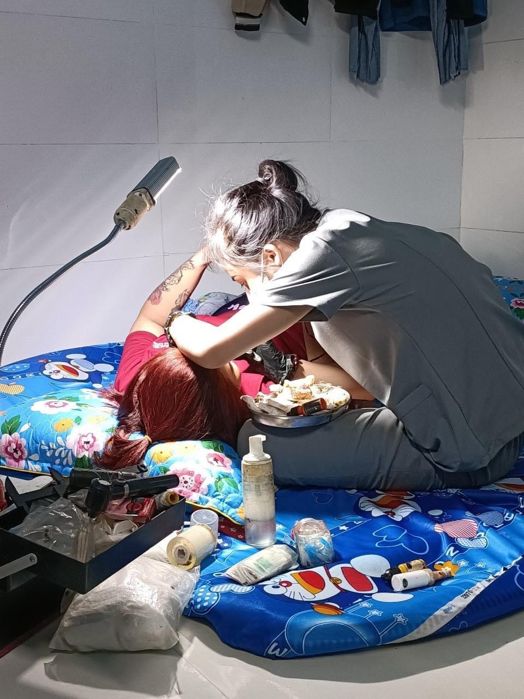
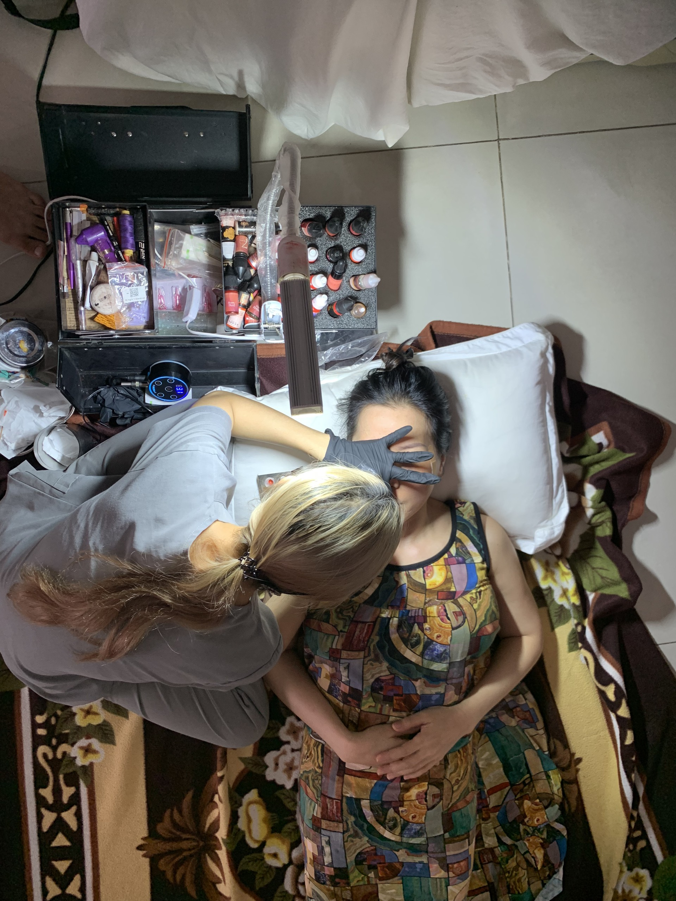
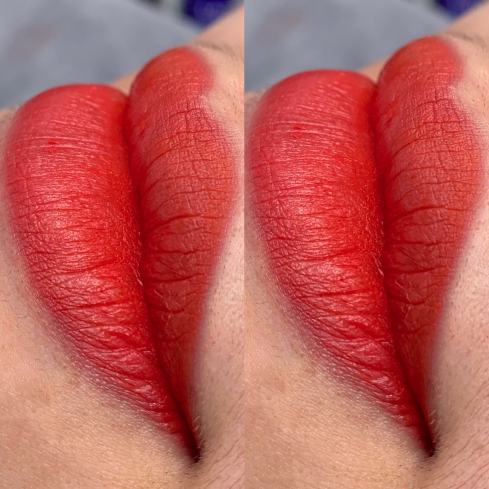

Tư vấn theo nỗi lo
Chọn màu môi theo màu da để không bị xỉn mặt
Chọn sai màu môi có thể làm da trông tối hơn, gương mặt già hơn hoặc màu không hợp phong cách.
Đọc bài tư vấnMục kiến thức ELLY
Trang này được phục vụ nhằm nâng cao giá trị bổ sung cho khách hàng trong quá trình tư vấn và thực hiện dịch vụ làm đẹp tại ELLY.
 Bài nổi bật
Bài nổi bật
Môi thâm làm gương mặt dễ mệt, tô son vẫn xỉn màu và khách thường sợ phun xong không lên màu.
Kiến thức làm đẹp
Nhiều khách muốn môi tươi nhưng sợ màu quá đỏ, quá già hoặc nhìn như trang điểm đậm mỗi ngày.
 Kiến thức làm đẹp
Kiến thức làm đẹp
Khách muốn làm môi nhưng ngại đau, sợ sưng lâu hoặc không biết mấy ngày mới sinh hoạt bình thường.
 Kiến thức làm đẹp
Kiến thức làm đẹp
Làm môi xong mà chăm sóc sai có thể khiến môi khô, bong không đều hoặc màu lên kém tươi.

Kiến thức làm đẹpKhách thường rối vì nghe quá nhiều lời kiêng khác nhau, không biết ăn gì để môi hồi phục tốt.
Chọn sai màu môi có thể làm da trông tối hơn, gương mặt già hơn hoặc màu không hợp phong cách.
Đọc bài tư vấn
Chân mày thưa làm mặt nhạt, sáng nào cũng phải kẻ nhưng nhiều khách sợ phun xong bị đậm và cứng.
Đọc bài tư vấn
Khách thích chân mày như sợi thật nhưng không biết nền mày của mình có hợp điêu khắc hay không.
Đọc bài tư vấn
Dáng mày sai có thể làm mặt dữ, già hoặc mất cân đối dù màu mày rất đẹp.
Đọc bài tư vấn
Sau khi làm mày, khách hay lo mày bong không đều, chỗ đậm chỗ nhạt hoặc lỡ tay bóc vảy.
Đọc bài tư vấn
Mắt thiếu nét làm mặt kém tỉnh táo, nhưng khách sợ phun mí bị đậm như kẻ eyeliner.
Đọc bài tư vấn
Khách bận rộn muốn làm đẹp tại nhà nhưng lo dụng cụ, quy trình và chất lượng có đảm bảo không.
Đọc bài tư vấn
Khách sợ chọn sai dịch vụ, sai màu hoặc không biết kết quả sau bong sẽ khác thế nào.
Đọc bài tư vấn
Sau bong môi có lúc nhạt, lúc đậm làm khách lo không biết kết quả cuối cùng có đẹp không.
Đọc bài tư vấn
Khách thấy màu nhạt sau bong nên lo phải làm lại ngay, nhưng dặm quá sớm có thể không phù hợp.
Đọc bài tư vấn
Khách sợ phun môi đẹp lúc đầu nhưng sau đó môi khô, xỉn hoặc nhanh nhạt màu.
Đọc bài tư vấnKhách muốn đẹp hơn nhưng sợ làm xong bị già, dữ hoặc nhìn quá khác so với bình thường.
Đọc bài tư vấn
Khách trung niên thường muốn mặt tươi hơn nhưng sợ màu quá trẻ, dáng quá sắc hoặc không hợp tuổi.
Đọc bài tư vấnKhách đặt lịch rồi nhưng không biết trước buổi làm cần chuẩn bị ảnh, không gian hay lưu ý gì.
Đọc bài tư vấn
Khách muốn làm đẹp nhưng phân vân nên làm môi, mày hay mí trước để thấy thay đổi rõ nhất.
Đọc bài tư vấn